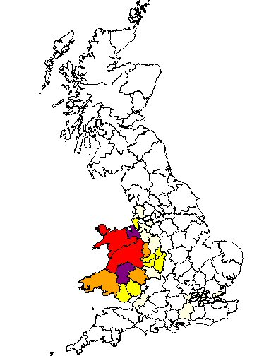

Our Lloyds originate in Worcestershire with the birth in 1780 of Richard Loyd. His son John was born in Claines, Worcestershire in 1804.
John Lloyd, a blacksmith, married Mary Ann Edwards of Claines in 1830. The family moved to Mansfield around 1836. Their daughter Louisa Lloyd married into the Ward family.
Return to Home